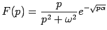
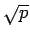
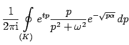
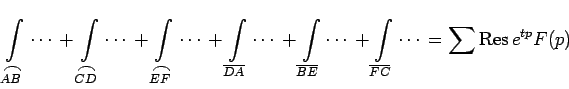
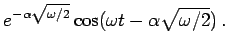

Inhalt Index DeskTop Bronstein

 Integraltransformationen Laplace-Transformation Rücktransformation in den Originalbereich
Integraltransformationen Laplace-Transformation Rücktransformation in den Originalbereich


 |
(15.46) |
stellt ein Integral mit komplexem Weg über eine in gewissen Gebieten analytische Funktion dar, auf das solche Methoden der Integration im Komplexen wie die Residuenrechnung oder die Verformung des Integrationsweges nach dem Satz von CAUCHY anwendbar sind.
| Beispiel |
|
 ist wegen des Anteiles  doppeldeutig. Deshalb wird folgender Integrationsweg gewählt (s. Abbildung): |
|  | = |  | |
| = |  |